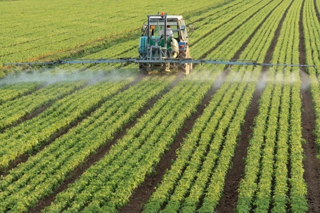
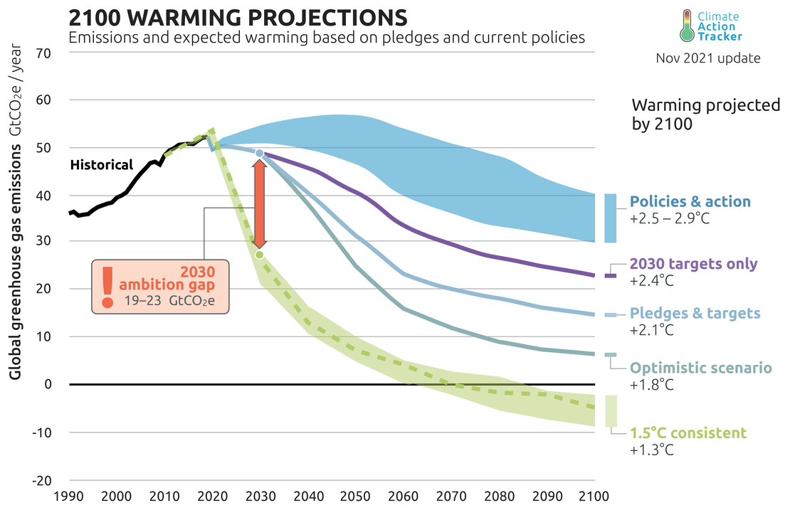

Understanding The Effects Of Climate Change
-
CONTACT US
- 13 Some Main Street, This County,
- Somewhere, Trinidad
- # 1868-456-7689
- infoname@gmail.com
Climate change is affecting the American people in far-reaching ways. Impacts related to climate change are evident across regions and in many sectors important to society—such as human health, agriculture and food security, water supply, transportation, energy, ecosystems, and others—and are expected to become increasingly disruptive throughout this century and beyond.
Climate change affects human health and wellbeing through more extreme weather events and wildfires, decreased air quality, and diseases transmitted by insects, food, and water. Climate disruptions to agriculture have been increasing and are projected to become more severe over this century, a trend that would diminish the security of America’s food supply. Surface and groundwater supplies in some regions are already stressed, and water quality is diminishing in many areas, in part due to increasing sediment and contaminant concentrations after heavy downpours.
Current policies presently in place around the world are projected to result in about 2.7°C[1] warming above pre-industrial levels. NDCs alone[2] will limit warming to 2.4°C. When binding long-term or net-zero targets are included warming would be limited to about 2.1°C[3] above pre-industrial levels, or in probabilistic terms, likely (66% or greater chance) limit warming below 2.3°C. Warming estimates for the pledges and targets scenario has fallen by 0.3°C compared to last assessment due, primarily, to the inclusion of the US and China’s net zero targets, now that both countries have submitted their long-term strategies to the UNFCCC.
The capacity of ecosystems like forests, barrier beaches, and wetlands to buffer the impacts of extreme events like fires, floods, and severe storms is being overwhelmed. The rising temperature and changing chemistry of ocean water is combining with other stresses, such as overfishing and pollution, to alter marine-based food production and harm fishing communities.
Some climate changes currently have beneficial effects for specific sectors or regions. For example, current benefits of warming include longer growing seasons for agriculture and longer ice-free seasons for shipping on the Great Lakes. At the same time, however, longer growing seasons, along with higher temperatures and carbon dioxide levels, can increase pollen production, intensifying and lengthening the allergy season. Longer ice-free periods on the Great Lakes can result in more lake-effect snowfalls.